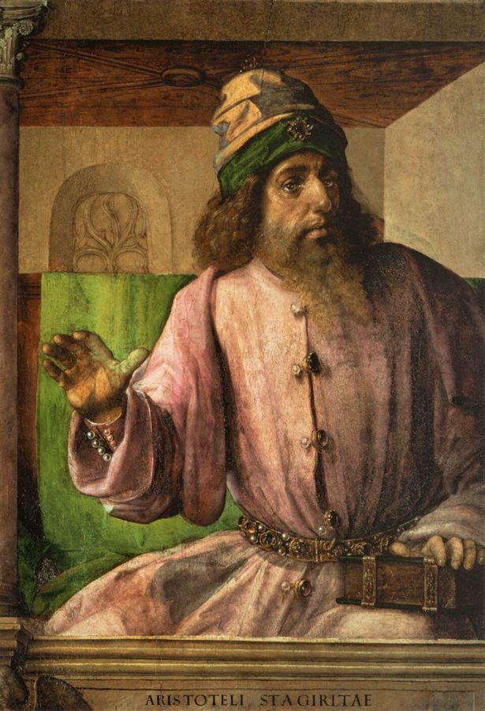

τί ἐστι;Justus van Gent, Aristotle, c. 1476
Now the real disagreement is on the table
Irwin was not Fine's opponent. White is.
White states the Two Worlds Theory as Plato's settled doctrine, in his own voice, without hedging: "Plato maintained that we have knowledge (epistēmē) only of Forms, and only belief or opinion (doxa) about perceptibles." That is the sentence Fine has spent a career denying.
They know it about each other. Fine cites this very chapter in her 2003 Introduction and marks the disagreement precisely: "That Plato sees a close connection here is rightly emphasized by N. P. White in, among other places, 'Plato's Metaphysical Epistemology'… Though we agree about the general point, we disagree about some of the specific connections Plato draws." Irwin cites White twice in footnotes, agreeing on some points and citing critics of him on others.
So the three of them are not three positions on one spectrum. White and Fine agree on the frame and split on the content; Irwin agrees with Fine on the content but is answering a different question.
Every cell quoted or paraphrased from the text. Where a chapter simply does not address something, that is stated rather than guessed.
| Question | White (1992) | Irwin (1999) | Fine |
|---|---|---|---|
| The Two Worlds Theory | AcceptsYes, Plato holds it. "Plato maintained that we have knowledge only of Forms, and only belief or opinion about perceptibles."§X, p. 300 | Does not address it. Zero mentions; the chapter stops before the Republic V epistemology. | RejectsNo. "The Republic, then, so far from endorsing the Two Worlds Theory, is incompatible with it."2003 Intro §II, p. 13 |
| What is wrong with perceptibles at Phaedo 74? | Contrary appearances, from perceptual perspective. "Perceptible equals are only deficiently equal precisely in that they inevitably present the appearance of being unequal."§III, p. 284 | Veridical compresence, and he explicitly rejects the appearance reading: in similar contexts Plato "normally speaks of 'the many Fs' appearing F and not F in a veridical sense."§8, p. 154 | Narrow compresence — F and not-F in virtue of one and the same aspect. Not appearance, not approximation.On Ideas ch. 4 §6, p. 57 |
| Do the "many Fs" include particulars, or only types? | Particulars. His whole account is about perceptible objects — sticks, pots, cheese, tabletops — presenting contrary appearances. | Types only. "Plato never asserts and never assumes… that we can infer compresence in tokens from compresence in types."§8, p. 156 | Types, for what motivates the theory — "it is only compresence in properties, and not compresence in particulars, that he takes to require the existence of forms."On Ideas ch. 4 n. 53 |
| What is a Form? | The notion — and also the property — of a thing's being F independently of viewpoint and circumstance.§XI, p. 301 | An explanatory property: that because of which (di' ho) all F things are F.§10, p. 159 | An explanatory property, and expressly not a meaning or notion. "forms are not meanings or particulars, but explanatory properties."On Ideas ch. 2 §5, p. 24 |
| Self-predication | Denies"The self-predicationist view would say that the Form of F is (predicatively) F. Plato's view is that the Form of F is what it is to be F apart from viewpoint and circumstances." Reads the Third Man as Plato disowning self-predication.§XI, p. 301 | Does not address it. The term appears zero times. | Accepts, broadlyBroad self-predication: the Form of F is F in virtue of its explanatory role, not by being a large large-thing.On Ideas ch. 4 §7, p. 61 |
| Is Plato holist or atomist about knowledge? | Tends toward atomism, and holism is filed as a problem: "As Plato's view about Forms begins to be expounded, it seems to tend toward a strict atomism."§XII, p. 303 | Gestures at coherence in the hypothetical method — test a hypothesis against "the whole set of these beliefs."§13, p. 166 | Holist, and this is a central positive thesis: one cannot know any individual entity or proposition on its own.2003 Intro §VI |
| Is knowledge justified true belief? | The question does not apply. "He clearly is not concerned with whether or not judgments about particular perceptibles can be adequately justified."§X, p. 300 | Not addressed. | Yes — knowledge is a type of true belief with an unusually rich justification condition. Hence knowledge cannot exclude belief.2003 Intro §I, §VI |
| Was Plato confused about relations? | No — and deliberately so. Plato treats large, hard, heavy as genuinely non-relational properties. Defends him with the "large flea" argument: relational paraphrases fail.§IV, pp. 285–6 | No, but via context: which property a length embodies "is not determined by the length itself, but by the context."§11, p. 163 | No, and she treats the issue at length in the Argument from Relatives.On Ideas chs. 10–13 |
White's chapter has a single governing thesis, and once you have it the rest of his positions follow mechanically:
"The notion of being really F is the notion of being F in a way that is independent of both the viewpoint of the judger and the circumstances of the object."White §VI, p. 292
He insists these two independences are combined into one idea, and that this is exactly what makes Plato alien to us. And he grounds it on introspection — when we call cheese hard, we are not consciously comparing it to anything, so the notion we actually deploy is non-relational and non-temporal.
Now the consequence. If "really F" means independent of all circumstances including time, then no perceptible thing can ever really be F — since perceptibles exist in time and are apprehended from perspectives. Knowledge of perceptibles is therefore not merely hard, it is structurally impossible. Two worlds is not an add-on to White's reading; it is what his account of "really F" produces.
Fine blocks this at the root. Her Forms are not notions we introspect but explanatory properties we discover, and "F-ness" is fixed by what explains, not by what a judgement feels like from the inside. Nothing in that requires perceptibles to be unknowable — which is why she can say Plato allows knowledge of sensibles without any strain.
White opens by refusing the modern split: "Certainly in Plato there is no such divide. His views about what there is are largely controlled by ideas about how knowledge can be accounted for." Fine's note calls this "rightly emphasized." Both build the metaphysics out of the epistemology; both reject the picture on which Plato posits Forms first and works out what can be known afterwards.
Both also reject the crude approximationist reading of "deficiency" — White says taking it to mean sensible equals are only roughly equal "conflicts with much else of what he says," and Fine agrees. So the popular imperfect-copies picture has no defender among these three.
Three readings, and they do not line up on one axis.
| White | Irwin | Fine | |
|---|---|---|---|
| Governing question | What conception of reality is Plato working with? | Why did Plato think there had to be Forms? | What are Forms, and what can be known? |
| Method | Introspection on what we mean; sympathetic reconstruction of an alien outlook | Argument reconstruction, dialogue by dialogue, tested against Aristotle's report | Numbered premises; fix the definition first, then ask whether Plato is committed |
| Verdict on Plato | His insight is "correct as far as it goes"; whether he was right to develop it as he did is "far more doubtful" | Coherent, and continuous with Socrates — the criticisms "vindicate the central Socratic doctrines" | More defensible than the tradition allows, once the two-worlds misreading is removed |
| Reads best as | The opposition. The most philosophically serious statement of the view Fine rejects | The long version of Fine's hinge argument | The revisionist case |
Order matters. Read White first — he gives you the strongest version of the standard picture, argued by someone who thinks Plato's outlook is coherent and alien rather than confused. Then Irwin, for why Plato needed Forms at all. Then Fine, who is arguing against White and with Irwin, and whose moves are legible only once you can see which target each one is aimed at.
If you want the fight at book length rather than chapter length, Jessica Moss's Plato's Epistemology: Being and Seeming (2021) — already in your folder — is White's position rearmed and updated, and the most substantial recent challenge to Fine.